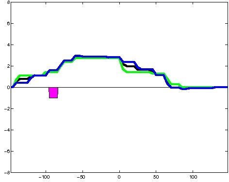
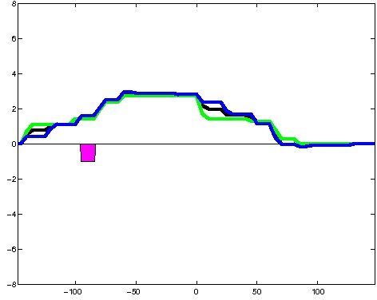
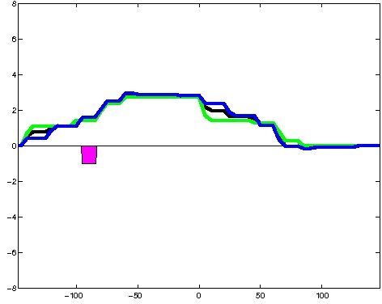

K562 Activating DNase matched - State 24:Quies (n=7)
K562 Activating DNase matched - State 24:Quies (n=7)
[
See group descriptions
]

; picked in K562 (state 24:Quies, DNase); matched; chr22:26,635,549-26,635,843 (295bp)") 

; picked in K562 (state 24:Quies, DNase); matched; chrX:141,256,369-141,256,663 (295bp)")